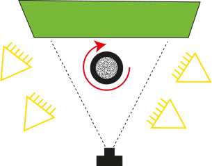

Content from Undertsanding our 3D world
Last updated on 2024-11-26 | Edit this page
Estimated time: 12 minutes
Overview
Questions
- How do camera devices understand data and spaces in the real-world?
- What information is recorded by sensor to record objects and environments?
- How do this method support registering motion within a physical 3D environments?
Objectives
- Have an awareness of the methods available for sensing (or gathering data) of physical 3D environments and objects.
- Understand the different types of sensors, in particular for detecting motion.
- Develop a good understanding of the Structure from motion method, also known as photogrammetry
- Understand the applications of these sensing technologies for Virtual Reality and Mixed Reality systems.

Tracking our physical environment is an important part of Virtual and Mixed Reality applications.
Challenge: Why tracking a physical environment?
Why tracking a physical environment is relevant to the development of VR/MR applications
Tracking allows the system to understand how a user is moving with respect to their physical environment, as well as allowing the user to seamlessly interact with digital content within the same space.
Tracking users is particularly relevant for VR/MR applications. It allows to determine the position and orientation of the users; as well as sensing and providing information regarding the physical space surrounding the user.
For instance, to understand how the user moves in space or seamlessly augment content in our physical space, we need spatial information about it.
An additional challenge is that things in our space are constantly moving, and being subject to the laws of physics.
Not only a localization problem, but also a measuring problem. It requires the computer to determine the exact position of the user and of obstacles in the surrounding environment in real time.
All of this needs to be computed at interactive rates or fast enough for the system to operate.
Content from Structure from Motion
Last updated on 2024-11-26 | Edit this page
Estimated time: 12 minutes
 Also known as photogrammetry.
Also known as photogrammetry.
Both terms are used to refer to the computing process of estimating the 3D structure of a scene from a set of 2D raster images. A photogrammetry software receives as an input a set of raster images of an object or environment and outputs a 3D model.
Definition
Defined by the American Society for Photogrammetry and Remote Sensing, photogrammetry is the practice of gathering reliable data about physical objects and environments through the recording, measurement, and interpretation of photographic images.
Photogrammetry is a highly favoured technique for documenting the shape and appearance of cultural heritage objects due to its cost-effectiveness.
Essentially, it entails taking 2D photos with a camera and using specialised software to create a 3D model.
This process involves the software initially identifying features in the images, followed by matching these features, and finally reconstructing the 3D object, with or without colour.
How does it do it?
The underlying technology is more familiar than you might think! It is based on the same principles that the ones used by our vision system to perceive the 3-dimensional world.


Because of this principle, analogue photographers in the 19th century were already producing stereoscopic and photogrammetric sets of images of many subjects1.
Does it work for everything
There is no restriction on the scale at which photogrammetry operates.
As such, photogrammetry is performed at a variety of ranges, from microscopic images to aerial or space images.
Be aware that it does not mean it can be applied to every object. There are some restrictions for deploying this technique. For instance, it does not work well with transparent or reflective, shiny objects. Neither does it work well with objects that move constantly, like a live animal or a dress worn by someone.
While photogrammetry may not be ideal for reflective, transparent, and moving objects, there are other solutions to address such issues.
Sometimes, this includes coating an object with powder-like sprays or accessing specialised dome-shape equipment that captures the interaction of light with an object so that this can be replicated in the 3D model.
Content from Creating 3D models via SfM
Last updated on 2024-11-26 | Edit this page
Estimated time: 12 minutes
Camera considerations
Some knowledge in digital photography is useful for photogrammetry. In case you do not have advanced skills, it is recommended that at least the following advice should be followed.
Resolution
Preferably shoot in RAW and in maximal resolution. JPG compression creates noise that should be avoided. If JPG images are to be used, then prefer high quality JPG images.
ISO values
ISO values should be the lowest possible as you want clear, sharp images without too much noise. ISO 100 will provide good pictures without much noise but for this you will need a tripod because longer shutter speeds will be required. For hand-held camera you can go up to ISO 800 but this will bring more grain to your pictures.
Aperture
Aperture value (f-number) should be high enough so as to be able to distinguish details without having blurred surfaces. A higher f-number means that you will get a better depth of field. Something between f/8 and f/16 would work well.
Shutter speed
Shutter speed should be fast enough to freeze images and avoid blur that is caused by the movement of the camera. If you are using a tripod you can use slower shutter speeds. The rule here is that anything below (slower) than 1/60 of a second requires a tripod.
Depth of field and focus
You should consider always a large depth of field when possible as good focus especially on the subject is important.

Be careful to have all the important parts of the image in focus. Automatic focus can be used when you are rotating around the object, but you can set focus manually if you are using a turntable.
For a better explanation on how depth of field works in conjunction with aperture, focal length and focus distance you can refer to the websites mentioned below.
Example of settings: f/8, ISO 400, shutter speed 1/30 and if light isn’t enough you can increase ISO to 800 OR lower shutter speed to 1/15 (remember that any shutter speed that is lower than 1/60 requires a tripod). Please note that these are just examples and you should check exposure for every acquisition depending on current light conditions.
More information:
- Cambridge in Color: https://www.cambridgeincolour.com/tutorials/depth-of-field.htm
- Photographylife: https://photographylife.com/what-is-depth-of-field
Before you start
Before embarking on photogrammetry, consider the object you want to digitise and the space available to do this. You might want to ask yourself:
- Does the object has enough texture for the software to find enough features?
- If outdoors, is the building or environment in a busy area with passers by or lots of foliage?
- Will I use natural or artificial or natural light to best illuminate the object?
- What equipment will I need with me if I need to travel to perform the digitisation, what will I have access once I am on site (e.g. power to recharge batteries)?
Overall, the recommendation is to avoid plain and monotonous surfaces. Flat, shiny, transparent, very thin artefacts and textures such as fur, hair won’t be the ideal candidates for photogrammetry.
Moving objects (e.g. leaves of a tree or people walking) are not good candidates either.
Some objects are shinny and the reflections will result in having lots of noise, hence a ‘bad’ model. Adding talc or corn-starch on the surface of the object could be a solution but this cannot be applied on most cultural heritage artefacts.
Significant colour changes or colour designs on a relatively plain surface could provide good reference points and help us to produce a model.
The best candidates are rigid, non-reflective, textured artefacts.
Photographing the object/environment
Good acquisition of images is important in order to have a successful project.
Depending on the type of the object and scene you want to acquire, you might be able to create an optimal setup which can allow you to develop a workflow to provide you with a good 3D model.
Thankfully, there is guidance and best practices, provided by independent bodies and software companies. For example, see the 3D Flow software guidance. We will be using this software in this workshop.
In general, start the acquisition from an angle/view of the object that has many details and is not very plain. Thereafter, you need to take images around the object as shown in the image below.
Overlapping
In all cases you need many overlapping images of the object or environment. When taking images, you need enough overlap between, around 50-60%, to make sure that the software will be able to align the images correctly.
Number of images
20-60 for each 360 acquisition. Remember that it is better to have more images than less. ‘Bad’ images (e.g. blurred, not in focus) can be deleted before processing.
Remember that you should avoid having ‘blind-zones’ and the object should occupy the maximum possible frame area.
Close-up photos are allowed only to capture minor details.


Targets/markers
You can put some markers and targets on/around/underneath the object that you want to acquire to help the software with the aligning process.
To support accurate measurements of 3D data you can also place a calibrated scale image underneath the object (or scale bars around it).
You can use these two images which contain both a texture, as well as a scale image. Follow the instructions, including printing in colour and at 1:1 scale:
Remember that these points should remain in the same position with respect to the object.

So, if you move with the camera around the object they should remain in the same place (e.g. placed around the object). But if you are using a turntable they should turn along with the object (e.g. placed underneath the object).
Lighting
Good lighting is required and occlusions should be kept to minimum.
The ideal conditions for an outdoor acquisition require an overcast/cloudy day.
If there is sun that creates shadows, you can use a sheet to shade the object of interest. But for buildings, it might not be possible as illustrated below.

{kind=link}

For indoor acquisition, you can use static artificial light. In this case, lights should have the same intensity.
It is better to use diffused light that is projected on every surface of the object equally.
Two light sources can be placed on the sides of the object at an angle of 45 degrees and one can come from the top.
Shadows should be avoided as much as possible (thus you might want to add more light sources, for example one at the back).
Types of setup
There are two different types of setup which you can use depending on the equipment and accesories you have access to. Their difference is whether the camera or the object remains static.
In cases where you cannot touch the object, then you will only have one choice: to move the camera.
In all cases you can create various series of images by varying the height of your camera. For this, you can raise or lower as well as adjust the angle of the camera to take another series of photos.
Static camera / move object
In this setup the camera is going to remain static on a tripod. Ideally you want to control the camera remotely to avoid small movements which can be caused by your hand pushing the trigger.
{alt=“static camera”Before you start}
The object is placed on a turntable. A turntable which is controlled remotely works best. Again, you want to minimise movements caused unintentionally on the object’s position.
To avoid the software getting confused on the object moving but the background remaining static, you can use a box or cloth as a background.
Black or white background work better as you want to avoid reflections onto the object and alter its colour. Black is always a safe choice, unless the object is dark. In such case, it is best to use a white background.
We will later mask the background, so that the software ignores it. To help with this, take an image of the setup without the object before placing the object. This will later become useful when applying the mask to the images.

If artificial light is used, this should be diffused and should not create shadows.


{kind=link}
The camera should be placed at a height that allows to see all important features of the artefact (e.g. at an angle of 45 degrees above the object).
When you photograph, rotate the turntable in small increments.
The advantage of this method is that you can have lower ISO and shutter speeds and thus sharper images (especially in indoor environments).
Here you can also find a video of a DIY rig that aims to speed up the process when shooting small and medium objects by Openscan.eu.
Static object / move camera
The object is placed at the centre and the photographer moves around it taking pictures.

Place the item at a good height so that it is possible to take images from a higher and a lower level.
In case some areas are not that visible, remember to take different pictures of that part from different angles.
The advantage of this method is that it will allow you to acquire larger objects without setting up lights.
Challenge: Taking photos
This activity can be done as a team
Experiment with both setups for photographing one or more objects relevant to your project. When doing this consider the best practices, including:
- Best camera and area setup.
- Adding scale to the images.
- How many series of images you plan to acquire and what is the strategy to achieve this.
Content from Software Workflow
Last updated on 2024-11-26 | Edit this page
Estimated time: 90 minutes
Step 1: Preparing the images
Once the photographs have been acquired, the next step is to transfer the images to a PC.
Using a batch processing software, such as Raw Therapee, you can convert the images from the raw file format to a format supported by the photogrammetry software. If you were not shooting using RAW settings, you can skip this step.
Usually, the uncompressed TIFF or TIF file format is a good choice, as it is uncompressed retaining a good quality. JPEGs have a compressed format, and although faster to handle might provide less data for feature recognition.
In any case, you must be sure you choose a format that retains the EXIF information within the file. This is because it contains useful information for the software projecting feature detected into 3D points.
You can check EXIF information online, for example using ExifInfo.org.
For this lesson, we provide images in [TIFF and JPEG format][datasets].
Step 2: Organising your workspace
We will start by creating a structure to store all the files for your project.
Create a folder using a name which reflects your project.
Good practices include:
ResourceIDofObjectifExistent_NameofObject_DateModelCreatedYY.MM.DDTransfer all images into a folder.
Within this folder, create another folder named images.
Copy the images from the camera into the images folder.
Step 3: Create a 3DF Zephyr project
The following instructions are specific to 3DF Zephyr.
Go to the workflow menu and choose New Project, you will be presented with a “New project wizard window”.
Choose the first box Sparse in order to go through the whole process manually.
Click Next> you will be presented with the “Photos selection page”.
Browse to the folder that contains your images and click Select Folder or select the relevant images if using Single Images.
Click Next>
You will be presented with the “Camera calibration page”.
If you have a separate Exif file for calibrating the camera you can add it here, and you can also manually calibrate your camera in the “Modify Calibration page” otherwise go on and click Next>

Step 4: Importing masks (optional)
Masking allows the software to concentrate in the most important information which is the object you have acquired. It works best when using the “static camera / object moves” setup.
In the “Photos selection page” there is an option to import the mask.
If selected a new option will be presented and a new tool called Masquerade will be available before importing the images.
Within this tool (which is also available from the main interface), it will be possible to generate a Mask to apply to all the images.
The tool is simple to use. To create a mask, you can use an image without any object on the turntable if using such setup.
But you can use a sample image provided in the dataset as a first file.
Step 5: Aligning photos
The next step is to align the photos.
This step will perform the three substeps: feature detection, feature matching and the first stage of the structure reconstruction step.
In the software, you will be presented with the “Camera orientation page”. Keep the general setting and click Next>.
More details about how to manipulate these and the following steps by selecting specific parameters can be found with more detail in the software online manual.
To start the reconstruction, click Run in the “Start reconstruction” page.
You will be presented with the “Reconstruction Successful page”. Click Finish.
Save the project in your project folder.
Once the camera orientation phase has been completed, the sparse point cloud will appear in the workspace as well as the oriented cameras identified by blue pyramids.
Now you can familiarise yourself with the navigation of the 3D space and the interface.
For example, go to Scene > Bounding Box > Edit Bounding box and limit the created sparse cloud within the bounding box.
This will speed up the process when creating the final mesh.

Step 6: Build a dense point cloud
Go toWorkflowin the menu and select Advanced > Dense Point Cloud Generation.
You will be presented with the “Dense Point Cloud Generation wizard”. Select All Cameras and click Next>
When presented with the “Dense Point Cloud Creation” page, leave the general settings and click Next>
Click Run on the“Start Densification” page.
When finished, you will see the “Dense Point Cloud generation successful” page. Click Finish.
Save the project.

Step 7: Cleaning the dense cloud
Before trying to create the final mesh, it is useful to delete all the unwanted points. The same bounding box can be used, or the unwanted points can be deleted manually.
Go to the Editing panel on your right and choose By Hand. Choose Poly and Remove.
Start selecting the points that you do not need and once selected deleted them with the delete key.
Once happy save the project.
Step 8: Building the 3D model
Go toWorkflowin the menu and select Advanced > Mesh Extraction
You will be presented with the “Mesh Generation wizard”.
Select from the drop down the name of your dense point cloud. Select All Cameras and click Next>
Leave the general settings on the “Surface Reconstruction” page and click Next>
Click Run on the“Start Mesh Creation” page.
When finished you will see the “Mesh Creation successful” page. Click Finish. This process will produce a 3D model.
Save the project.

Step 9: Building the raster texture
The final step is to re-project the texture onto the 3D surface.
Go toWorkflowin the menu and select Textured Mesh Generation.
You will be presented with the “Textured Mesh Generation wizard”. In the drop down menu select the name of your mesh. Select All Cameras and click Next>
Leave the general settings in the “Texturing” page and click Next>
Click Run on the “Textured Mesh Generation wizard” page.
When finished you will see the “Textured Mesh Generation wizard result” page. Click Finish.
Now you will have a 3D model with the texture.
Save the project.


Step 10: Exporting the 3D model
At this point, we can export the 3D model.
Create another folder called “Exports” within your project folder and save the model in this folder.
It will be useful to export various 3D models at various resolutions. This will allow you to keep a high-resolution 3D model, while having a low-resolution 3D model for sharing and making available on the web.
It is good practice to name your models with information, for example:
ResourceIDofObjectifExistent_NameofObject_DateModelCreatedYY.MM.DD.[highres|medres|lowres]Go to Export in the menu and select Export Textured Mesh.
Select from the drop down, the name of your mesh.
Select from the drop down your preferred format and click Export.
To export the model at a lower resolution select your textured mesh in the right window “Textured Meshes”. Right Click on it and select Clone. A copy of your mesh will be created.
Go to Tools in the menu and select Mesh Filters > Decimation. You will be presented with the “Mesh decimation” window.
Select in the drop down menu the name of your cloned mesh. Select preserve boundaries and Apply Filter.
At this point, we need to regenerate the texture for the lower-resolution mesh. To do so we need to repeat the process above for generating the texture.
Go to Export in the menu and select Export Textured Mesh. Select in the drop down menu the name of your second mesh.
For web sharing GLTF is a good format to use. Select from drop down menu the format .glb or .gltf and click Export.
Challenge: Processing the photos and creating a 3D model
This activity can be done as a team
By using the images you captured during the lesson, use the software to create a 3D model.
Produce two versions: a high-resolution and a low-resolution and save on your PC.
Content from Technologies for sensing
Last updated on 2024-11-26 | Edit this page
Estimated time: 12 minutes
Sensing data

Sensors sample signals that measure real world physical data. This includes sampling:
- Acceleration forces (accelerometer)
- Visible light (photosensors)
- Images (CCD sensor)
- Distances to objects (laser based detection)
- Other data including temperature, humidity, pressure, wind direction and speed, illumination intensity, vibration intensity, sound intensity, power-line voltage, chemical concentrations, pollutant levels and vital body functions.
Samples are converted into numeric values that can be manipulated by a computer.
Driven by the low cost, many of the devices which we use today contain sensors. This allows us to sense data all around us.Most of these sensors are relevant for Internet of Things, and Internet of Place technologies.

Sensors also allows objects and environments to respond and interact with their environment.
Building on their wide availability, sensors also allow Virtual Reality and Mixed Reality to be more affordable.
Challenge: VR sensors?
Think on which sensors are used by VR headests?
VR headset can include a variety of sensors, including:
- Inertial Measurement Unit (IMU) to measures force and angular rate by using a gyroscope, accelerometer and magnetometer.
- Image sensor
- Proximity sensor
Motion capture
Detecting motion is of interest to many applications, including the film and game industry. Sensors can detect any moving objects, and for many years they have been used fro detecting movement of people’s bodies.
This is in particular relevant for animation of digital data. It allows to transfers the movement of an actor to a digital character.
Requires to have a 3D polygonal mesh which is ready for animation.

However, remember polygonal meshes are RIGID. They do cannot be easily deformed. For this, animators undertake a process to animated or transform sections of the polygonal mesh.
This requires creating a system of joints (similar than our human body). This process is known as rigging. A rig is the digital skeleton formed of joints and bones.
This functionality is offered by modelling packages, and game engines:
- Unity: https://docs.unity3d.com/Manual/AnimationSection.html
- Unreal: https://dev.epicgames.com/documentation/en-us/unreal-engine/animating-characters-and-objects-in-unreal-engine
- Godot: https://docs.godotengine.org/en/stable/tutorials/animation/introduction.html

Below you will find details on the different technologies for capturing data for animation.
Types of Tracking Systems for Motion Capture
There are different type of systems: optical vs non optical systems.
Non-optical tracking
- Based on sensors which measure inertia or mechanical motion, including accelerometer electromechanical device that measure acceleration forces.
- Come often with easy wearable systems.
- Enable accurate motion capture.
For example, Xsens MVN solution for 3D Character Animation.

Optical tracking
- Use multiple digital cameras.
- Based on the information provided by the cameras looking at the element in motion-tracked within a limited area.
- Use position markers in the environment.
- Assemble the data into an approximation of the actor’s motion.
- The specific technology is based on the role light plays in the capture process: active versus passive system.

Active tracking
- Markers are based on light such as LEDs.
- Systems illuminate one LED or multiple LEDs at a time.
- Software identify markers by their relative positions.
Passive tracking
Based on information provided by one or more digital cameras, including depth sensors.
This allows for example hand and finger tracking
VR devices now come with depth camera system for finger tracking.

Hybrid systems
- Use accelerometers and images.
- Features in the images are used as markers.
- Similar to Structure from Motion technology.
Augmented Reality Systems make use of hybrid systems for tracking
capabilities. 
Advantages and disadvantages
Non-optical systems are portable but can restrict movement.
Optical systems can be very precise, but are non portable.
Performance and cost
An important metric for sensing is the accuracy of the system. This includes both hardware and software.
Active methods are more accurate, depending on the emitting power of the light source. But they tend to have a higher cost.
Passive methods are reliant on the ability to find features in the scene, but have a lower cost.
Content from Tracking in VR
Last updated on 2024-11-26 | Edit this page
Estimated time: 12 minutes
Virtual Reality (VR) headsets are distinct from regular 3D displays in that they are tracked. This allows the system to provide 3 Degrees or 6 Degrees of Freedom.
{kind=link}
Tracking in VR is also known as a positional tracking or pose tracking. It allows the headset to capture, follow, and get information about an object’s orientation and position, to be transferred to an application for further processing.

See examples of Pose Estimation libraries:
- Media Pipe: https://huggingface.co/spaces/hysts/mediapipe-pose-estimation
- Tensor Flow: https://www.tensorflow.org/lite/examples/pose_estimation/overview Pose detection

What do we track?
In a VR system, the aim is to track information of the user, including:
- Position and orientation of the user’s head.
- Controllers and other important objects.
- Hands
In AR systems, object, images, or markers are used to determine the user’s position and orientation.
Types of tracking
As before, tracking can be optical vs non optical. We will focus on the optical, and make a distinction between outside-in and inside-out tracking.
Optical outside-in tracking
In this type of tracking, cameras are placed in stationary locations in the environment to track the position of markers on the tracked device. For example, the HTC VIVE uses outside-in tracking.
IR LEDs on its headset and controllers allow external cameras in the environment to read their positions.
Optical Inside-out tracking
The camera is placed on the tracked device and looks outward to determine its location in the environment.
Headsets have multiple cameras facing different directions to get views of its entire surroundings.
Can work with or without markers.
SLAM (Simultaneous localization and mapping)
Markerless tracking, such as on the Oculus Quest.
Algorithms to construct or update a map of an unknown environment while simultaneously keeping track of an agent’s location within it
A 3D map of the environment is generated in real time.

Further information: https://xinreality.com/wiki/Main_Page